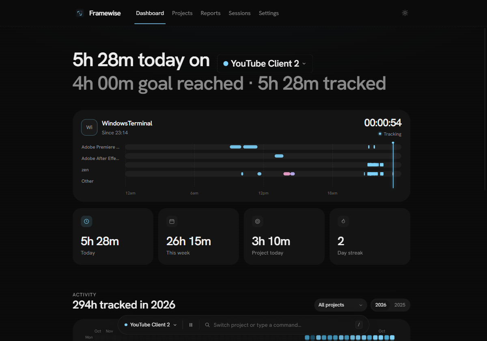

Adobe-first attribution
Premiere, After Effects and Photoshop time lands on the project you selected. Add any other app to that project's tools and it counts too.
Framewise follows the app in focus and credits Adobe time to the project you're actually on. It lives in the tray, keeps everything local, and stays out of the edit.

No voiceover, no stock footage. Just the app, the timeline and the work.
Premiere, After Effects and Photoshop time lands on the project you selected. Add any other app to that project's tools and it counts too.
One readable timeline with app tracks, session pills and a cursor that sits exactly where you are.
CSV, JSON or Markdown from the same local database. Choose a range, a project, and export.
Start from a Montage or YouTube video template, or pick apps already saved in Framewise. Goals count only the selected tools.
Dark and light share the same layout. Click any screen to enlarge.
The tray dock keeps the active project one click away. No project means Adobe time is left unassigned.
Premiere, After Effects and Photoshop credit the project automatically. Sleep, idle and lock never count.
Goal rings, a year heatmap and a report you can export. All from the same local file.
No accounts, no telemetry, no remote fonts. A single SQLite file, a portable folder and a tray icon. Backup or import it whenever you like.
Two overlapping frames for the edit, a clock for the time. The mark settles once when Framewise opens, then stays out of the way.
Installer or portable zip. Windows 10/11. No account, no telemetry. Updates are optional.